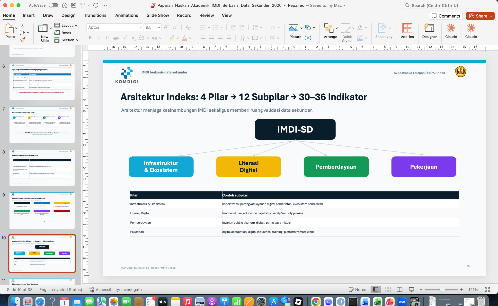
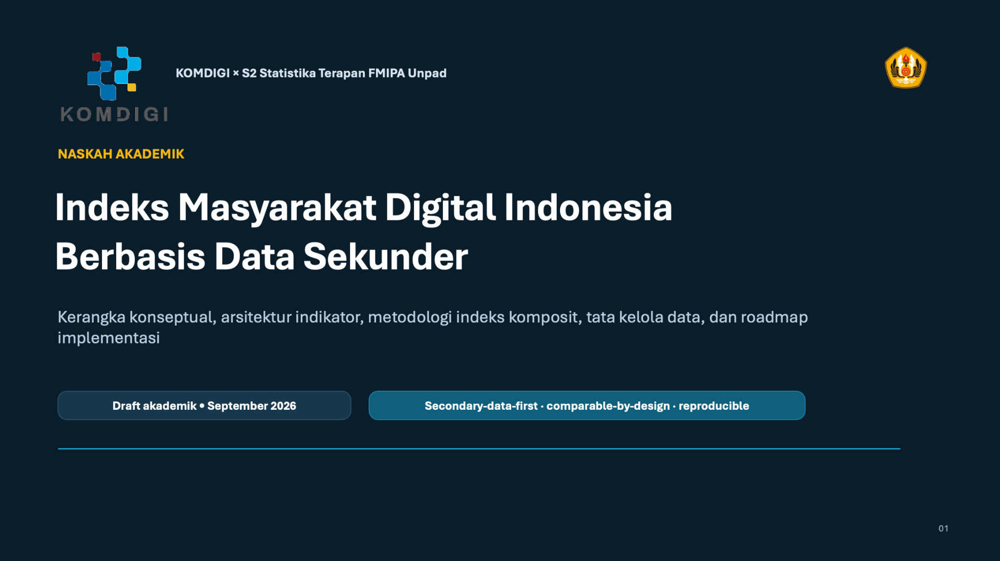

Kamis, 1 Oktober 2026 — Kementerian Komunikasi dan Digital (Komdigi) bersama Program Studi Magister Statistika Terapan FMIPA Universitas Padjadjaran melaksanakan diskusi mengenai transformasi metodologi Indeks Masyarakat Digital Indonesia (IMDI). Kegiatan berlangsung secara hybrid pada Kamis, 1 Oktober 2026, mulai pukul 10.00 hingga 13.00 WIB.
S2 Statistika Terapan FMIPA Unpad dalam kegiatan ini diwakili oleh Ketua Program Studi, Prof. Dr. I Gede Nyoman Mindra Jaya, M.Si. Diskusi difokuskan pada pengembangan kerangka IMDI yang sebelumnya bertumpu pada data primer menuju pemanfaatan data sekunder sebagai sumber utama pengukuran, dengan tetap menjaga validitas, konsistensi, keterbandingan antarwilayah, serta kesinambungan seri indeks.
Fokus pembahasan metodologi
Dalam sesi pembahasan, beberapa komponen utama naskah akademik IMDI berbasis data sekunder menjadi titik perhatian, meliputi kerangka konseptual, arsitektur indikator, metodologi pembentukan indeks komposit, tata kelola data, dan roadmap implementasi. Rancangan yang dibahas mempertahankan empat pilar utama IMDI, yaitu Infrastruktur dan Ekosistem, Literasi Digital, Pemberdayaan, dan Pekerjaan.

Arah pengembangan berbasis data sekunder
Pemanfaatan data sekunder diharapkan dapat memperkuat efisiensi proses pengukuran dan membuka peluang pemutakhiran indeks yang lebih berkelanjutan. Namun demikian, setiap sumber data tetap perlu melalui proses evaluasi statistik yang ketat, termasuk pemeriksaan definisi operasional, unit observasi, frekuensi pembaruan, keterwakilan wilayah, missing data, perubahan sistem pencatatan, serta kemungkinan perbedaan standar antarinstansi.
Pembahasan juga menekankan pentingnya prinsip comparable-by-design dan reproducible. Dengan prinsip tersebut, metodologi IMDI diharapkan tidak hanya menghasilkan angka indeks, tetapi juga menyediakan jejak metodologis yang jelas dari sumber data, proses transformasi, standardisasi, pembobotan, agregasi, hingga validasi hasil.

Kolaborasi akademik untuk penguatan IMDI
Kolaborasi antara Komdigi dan S2 Statistika Terapan FMIPA Unpad menjadi ruang penting untuk mempertemukan kebutuhan kebijakan publik dengan pendekatan statistika yang kuat. Melalui diskusi ini, aspek konseptual dan teknis penghitungan IMDI dapat dikaji secara bersamaan sehingga transformasi sumber data tetap mempertahankan integritas pengukuran.
Diskusi pada 1 Oktober 2026 ini menjadi bagian dari proses penyempurnaan metodologi dan naskah akademik IMDI berbasis data sekunder. Hasil pembahasan selanjutnya dapat digunakan sebagai dasar untuk memperjelas pemetaan indikator, evaluasi kualitas sumber data, simulasi metode penghitungan, serta penyusunan tahapan implementasi.